DV-GQ-002 · O monitoramento do plano corretivo aprova com ação pendente quando a operação chega sem o botão
Com a ação do plano ainda Pendente, o botão Aprovar do monitoramento não aparece. Mas o servidor aceita a mesma operação quando ela chega sem o botão: o plano foi aprovado ("Aprovado Plano Ação Corretiva") com a ação Pendente. A conferência existe só na tela.
Como reproduzir o erro, passo a passo
- Levar um desvio ao monitoramento do plano corretivo com uma ação ainda Pendente (o botão Aprovar não aparece).
- Enviar a operação de aprovação sem passar pelo botão (chamada direta da função da página).
Esperado
Exigir todas as ações concluídas antes de aprovar o plano.
Obtido
O plano foi aprovado ("Aprovado Plano Ação Corretiva") com a ação ainda Pendente.
Evidência (captura da tela)


DV-GQ-005 · O plano da mudança é finalizado com ação não executada quando a operação chega sem o botão
A GQ finaliza o plano de ação da mudança com uma ação ainda não executada. O botão Finalizar não aparece com ação pendente, mas o servidor aceita a operação enviada sem o botão: a mudança ficou "Aceito" sem a ação executada.
Como reproduzir o erro, passo a passo
- Levar uma mudança à finalização do plano com uma ação pendente.
- Enviar a finalização sem passar pelo botão.
Esperado
Não finalizar com ação pendente.
Obtido
A mudança ficou "Aceito" sem a ação executada.
Evidência (captura da tela)
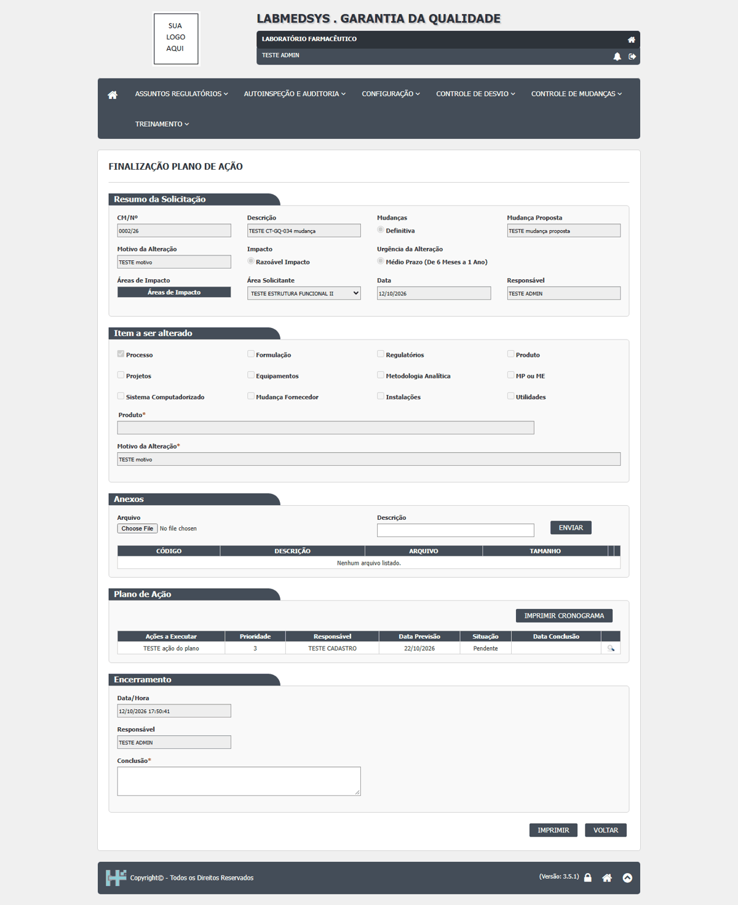
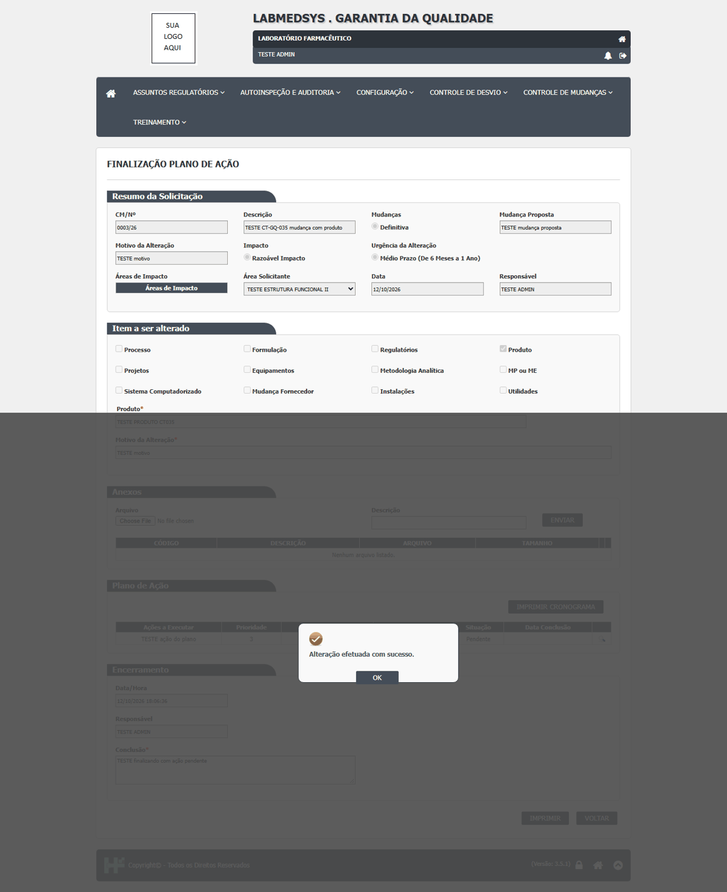
DV-GQ-012 · Plano preventivo sem botão Reprovar: com ação "não implementada" o desvio é finalizado
O Monitoramento do Plano de Ação Preventiva só tem o botão Aprovar (não há Reprovar). Mesmo marcando a única ação como "Não implementada", preenchendo as observações e confirmando as duas perguntas, o desvio vai para "Finalizado". O código trata tudo o que não for aprovação como reprovado e leva o desvio a "Concluído": plano reprovado encerra o desvio. Reconfirmado em 21/10 e 22/10/2026.
Como reproduzir o erro, passo a passo
- Abrir o monitoramento do plano preventivo de um desvio em "Pendente Monitoramento do Plano Ação Preventiva".
- Marcar a ação como "Não implementada", preencher a observação da ação e a verificação final.
- Clicar em Aprovar (único botão) e confirmar "Deseja realmente finalizar?".
Esperado
Um plano reprovado não pode encerrar o desvio como resolvido; deve haver o caminho de reprovar.
Obtido
O desvio passou à situação "Finalizado" (a rodada de 15/10 ainda não tinha percorrido a segunda confirmação, por isso viu o clique sem efeito).
Evidência (captura da tela)
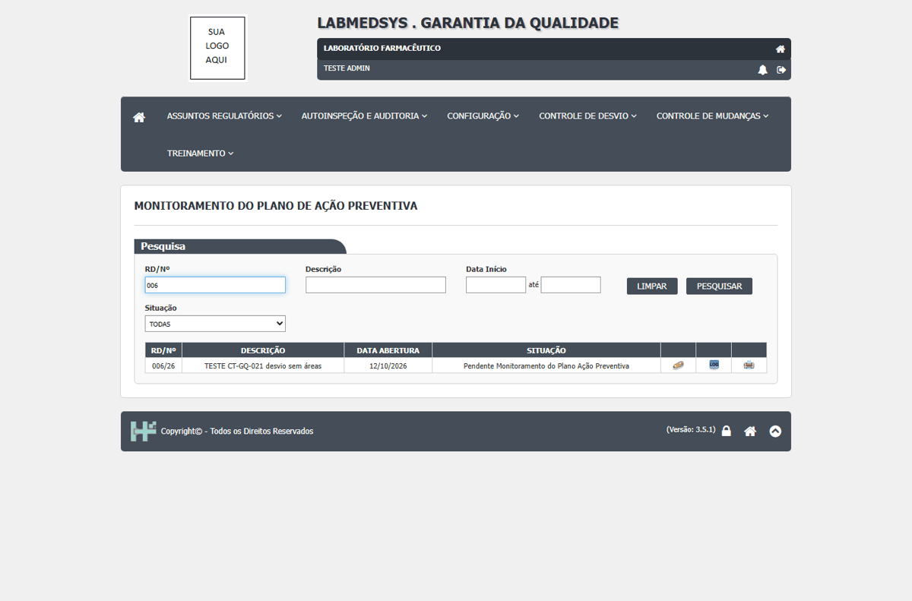
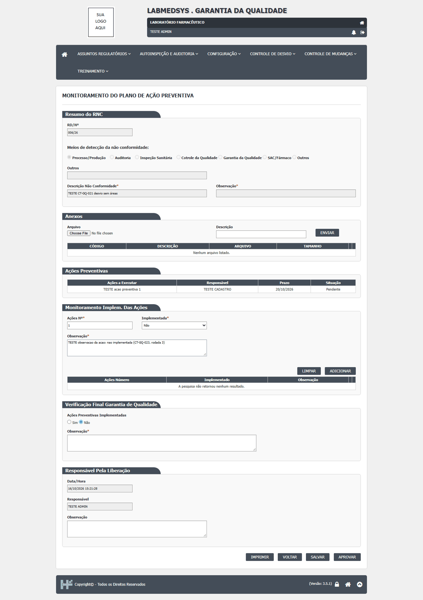
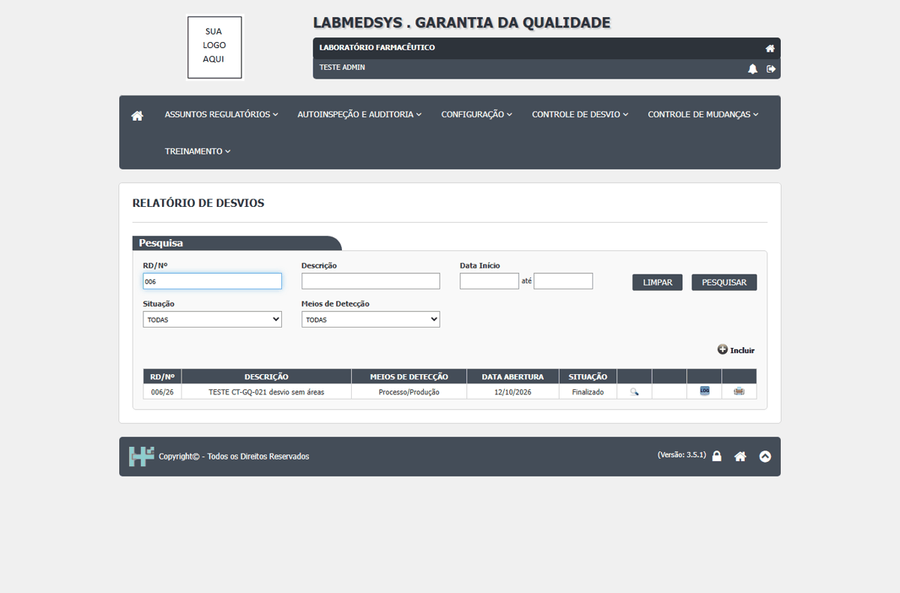
DV-GQ-016 · Liberação do plano corretivo só tem Aprovar: o estado "reprovado" nunca é alcançado
A Liberação do Plano de Ação Corretivo também só tem o botão Aprovar, sem Reprovar. O código prevê o estado "Reprovada Plano Ação Corretiva", mas a tela não oferece o caminho: esse estado nunca é alcançado por ninguém. Mesmo problema do DV-GQ-012, agora no lado corretivo. Reconfirmado em 21/10/2026 (P9.3, P12.1): Aprovar aceita "Não".
Como reproduzir o erro, passo a passo
- Levar um desvio até "Pendente Monitoramento do Plano Ação Corretiva" (passando por CAPA, plano e execução).
- Na Liberação do Plano de Ação Corretivo, procurar o botão Reprovar.
Esperado
Existir o caminho de reprovar o plano corretivo e o desvio seguir para uma tela que o trate (o caso pedia registrar se o desvio ficasse sem tela para seguir).
Obtido
Só existe o botão Aprovar; a reprovação nunca pode ser feita pela tela.
Evidência (captura da tela)

DV-GQ-020 · O plano de ação corretiva é aceito sem nenhuma ação
O plano de ação corretiva é aceito sem nenhuma ação. O que a tela mostra: "Alteração efetuada com sucesso."; o desvio vai a Pendente Monitoramento sem ação.
Como reproduzir o erro, passo a passo
- Adicionar uma ação, remover pela lixeira, salvar o plano.
Esperado
Recusar o plano sem nenhuma ação.
Obtido
"Alteração efetuada com sucesso."; o desvio vai a Pendente Monitoramento sem ação.
Evidência (captura da tela)


DV-GQ-021 · O monitoramento corretivo aprova com "Implementada = Não", com ação inexistente e com plano sem ações
O monitoramento corretivo aprova com "Implementada = Não", com ação inexistente e com plano sem ações. O que a tela mostra: Aprova e o desvio vai a Aprovado Plano Ação Corretiva.
Como reproduzir o erro, passo a passo
- Resultado com Ação Nº 99 (inexistente), Aprovar.
- Também Implementada = Não.
- Também plano sem ações.
Esperado
Recusar.
Obtido
Aprova e o desvio vai a Aprovado Plano Ação Corretiva.
Evidência (captura da tela)


DV-GQ-022 · O monitoramento preventivo finaliza o desvio sem resultado e sem verificação final
O monitoramento preventivo finaliza o desvio sem resultado e sem verificação final. O que a tela mostra: Finaliza o desvio sem resultado e sem verificação final; só pede a confirmação.
Como reproduzir o erro, passo a passo
- Aprovar sem nenhum resultado.
- Aprovar sem verificação final.
Esperado
"É necessária resultado da implementação das Ações." / "A Observação de Verificação Final é obrigatória."
Obtido
Finaliza o desvio sem resultado e sem verificação final; só pede a confirmação.
Evidência (captura da tela)
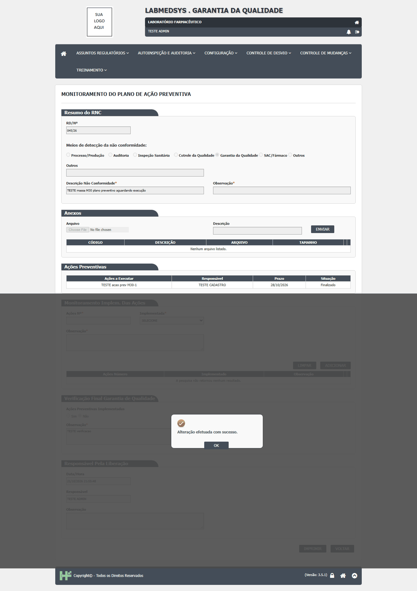
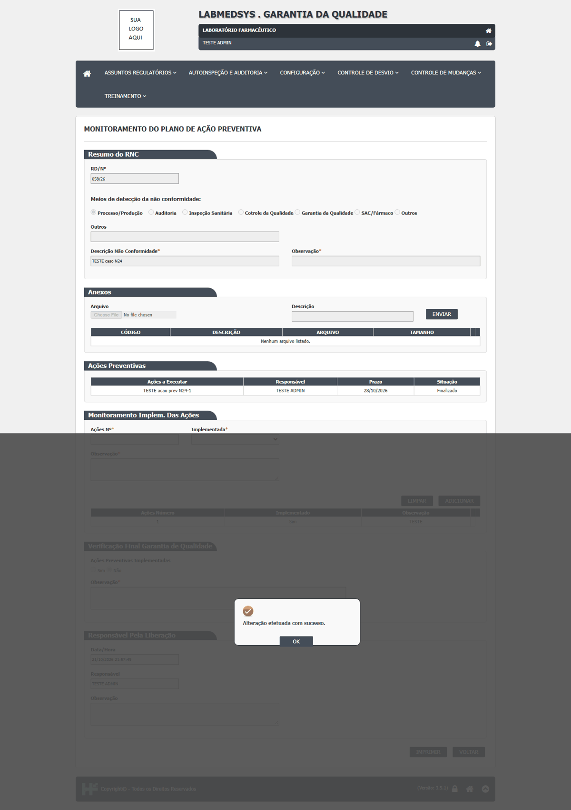
DV-GQ-023 · A mesma pessoa escreve o plano preventivo, executa a ação e aprova
A mesma pessoa escreve o plano preventivo, executa a ação e aprova. O que a tela mostra: Aceita sem aviso nem senha.
Como reproduzir o erro, passo a passo
- O mesmo usuário escreve o plano preventivo, executa a ação e aprova.
Esperado
Impedir (separação de funções).
Obtido
Aceita sem aviso nem senha.
Evidência (captura da tela)
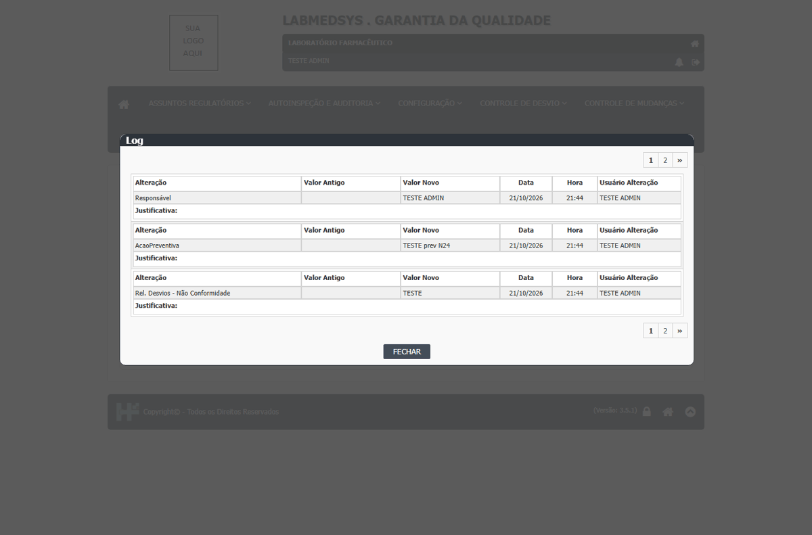
DV-GQ-025 · Ação concluída com prazo vencido ou data anterior à abertura é aceita sem aviso nem justificativa
Ação concluída com prazo vencido ou data anterior à abertura é aceita sem aviso nem justificativa. O que a tela mostra: Tudo aceito sem aviso nem justificativa; a justificativa do histórico fica vazia.
Como reproduzir o erro, passo a passo
- Concluir ação com prazo vencido.
- Data anterior à abertura.
- Regravar conclusão.
Esperado
Aviso de atraso e justificativa.
Obtido
Tudo aceito sem aviso nem justificativa; a justificativa do histórico fica vazia.
Evidência (captura da tela)


DV-GQ-046 · O monitoramento preventivo finaliza o desvio com ação ainda pendente
O monitoramento preventivo finaliza o desvio com ação ainda pendente. O que a tela mostra: Finaliza o desvio.
Como reproduzir o erro, passo a passo
- Plano com ação Pendente, resultado e verificação preenchidos, Aprovar.
Esperado
Não permitir.
Obtido
Finaliza o desvio.
Evidência (captura da tela)
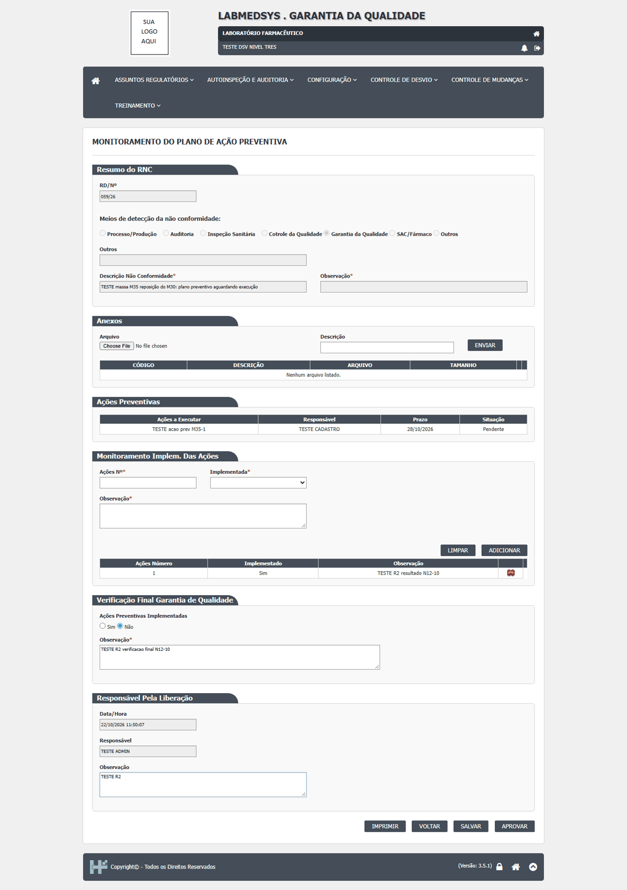
DV-GQ-047 · Salvar e finalizar o monitoramento preventivo não deixam registro no histórico
Salvar e finalizar o monitoramento preventivo não deixam registro no histórico. O que a tela mostra: Nenhum registro novo (nem Salvar, nem a finalização).
Como reproduzir o erro, passo a passo
- Salvar e Aprovar a tela 12 e abrir o histórico.
Esperado
Registro da situação, dos resultados, de quem e de quando.
Obtido
Nenhum registro novo (nem Salvar, nem a finalização).
Evidência (captura da tela)
DV-GQ-078 · Aprovar o monitoramento preventivo finaliza o desvio mesmo respondendo NÃO à confirmação
Aprovar finaliza o desvio mesmo respondendo NÃO à pergunta "Deseja realmente finalizar?"
Como reproduzir o erro, passo a passo
- Tela 12, desvio com resultado e verificação final, Aprovar, SIM na primeira pergunta e NÃO na segunda ("Deseja realmente finalizar? A partir da finalização não será possível alterar o Desvio.").
Esperado
Nada gravado e tela editável.
Obtido
Situação Finalizado e campos travados; repetido nos desvios 073/26 e 052/26.
Sem captura de tela registrada para este defeito.
DV-GQ-086 · O Relatório de CAPA impresso sai com uma mensagem de erro no lugar da avaliação
O Relatório de CAPA impresso traz uma mensagem de erro no lugar da avaliação, em todos os PDFs de CAPA.
Como reproduzir o erro, passo a passo
- Imprimir o Relatório de CAPA pelas telas 7 a 12 (visto em 038, 040, 044, 053, 066 e 078).
Esperado
Relatório completo com a avaliação.
Obtido
No lugar do bloco da avaliação aparece uma mensagem de erro do gerador de relatórios (a avaliação não é carregada) e o resto do relatório sai. Visto nos desvios 038, 040, 044, 053, 066 e 078.
Sem captura de tela registrada para este defeito.
DV-GQ-247 · Excluir a única ação do plano e salvar é aceito: a mudança é finalizada sem nenhuma ação
No Plano de Ação, adicionar uma ação, excluir a única ação e salvar mostra "Alteração efetuada com sucesso.". A mudança vai a Pendente Finalização Plano Ação sem nenhuma ação; na Finalização aparece o botão Finalizar e a mudança vai a Aceito. Salvar com a grade que nunca teve ação é recusado; o caminho de excluir não.
Como reproduzir o erro, passo a passo
- Abrir o Plano de Ação de uma mudança, adicionar uma ação, excluí-la e salvar.
- Abrir a Finalização da mudança, digitar a Conclusão e clicar em Finalizar.
Esperado
Recusar plano sem nenhuma ação.
Obtido
Plano salvo sem ação; a mudança foi finalizada e ficou Aceita sem executar nada.
Evidência (captura da tela)
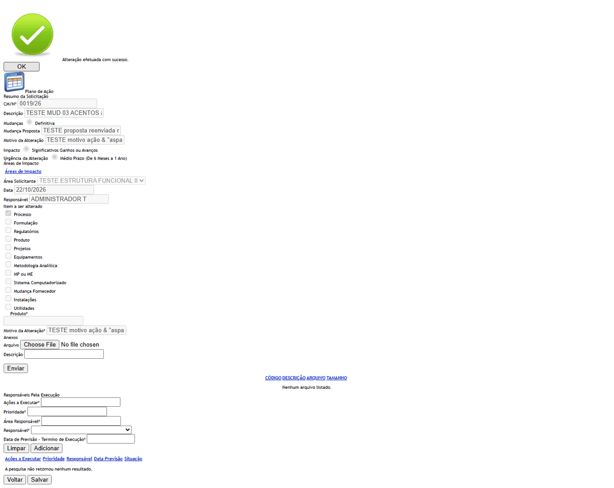
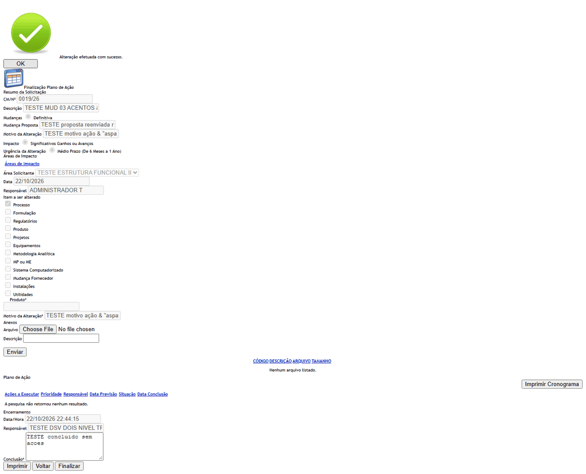
DV-GQ-248 · Ação já finalizada é alterada pelo Plano de Ação sem justificativa e a alteração não vai ao histórico
Em um plano com ação já Finalizada, o lápis da ação abre os campos. A descrição foi mudada e salva: "Alteração efetuada com sucesso.", sem justificativa. A ação continua Finalizada e o histórico não registra a alteração (as últimas linhas continuam sendo a inclusão da ação e as mudanças de situação).
Como reproduzir o erro, passo a passo
- Abrir o Plano de Ação de uma mudança com ação Finalizada.
- Clicar no lápis da ação, mudar a descrição e salvar.
- Abrir o histórico da mudança.
Esperado
Bloquear a alteração de ação finalizada, ou exigir justificativa e registrar valor antigo e novo.
Obtido
Alterou e salvou sem justificativa; o histórico não mostra a alteração.
Evidência (captura da tela)
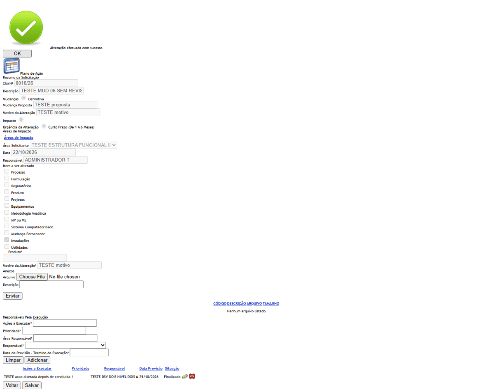
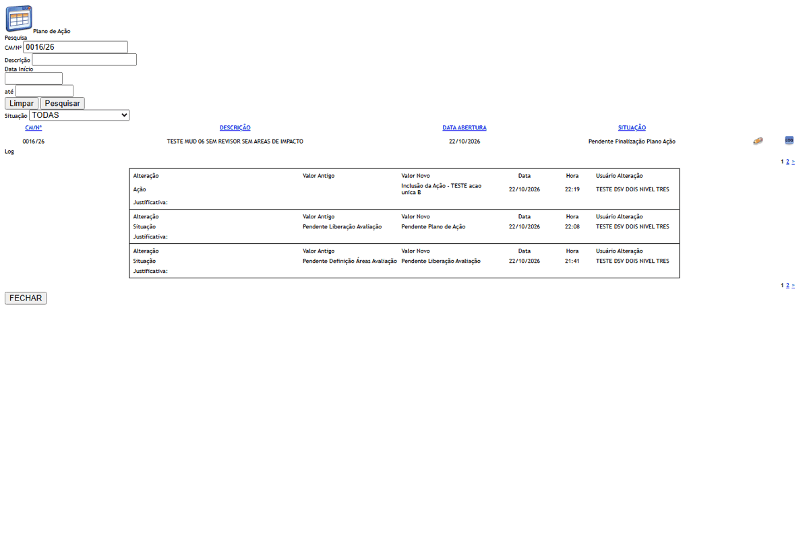
DV-GQ-253 · Ação já finalizada é reaberta e alterada na Execução sem justificativa, e a Data/Hora mostrada é a de agora
A ação já Finalizada é reaberta pelo lápis e a observação alterada e salva: "Alteração efetuada com sucesso.", sem justificativa. O Log mostra "Observação: antigo → novo" e a "Data Avaliação" sobrescrita pela hora do novo salvamento, sem justificativa. Salvar de novo uma ação já finalizada também foi aceito. O campo Data/Hora mostrado ao reabrir é o do momento em que a tela abre, não o da conclusão.
Como reproduzir o erro, passo a passo
- Abrir a Execução de uma ação já Finalizada pelo lápis.
- Mudar a observação e salvar.
- Abrir o Log da ação.
Esperado
Ação finalizada não ser reaberta, ou exigir justificativa e preservar a data original da conclusão.
Obtido
Alteração aceita sem justificativa; a Data Avaliação foi sobrescrita.
Evidência (captura da tela)
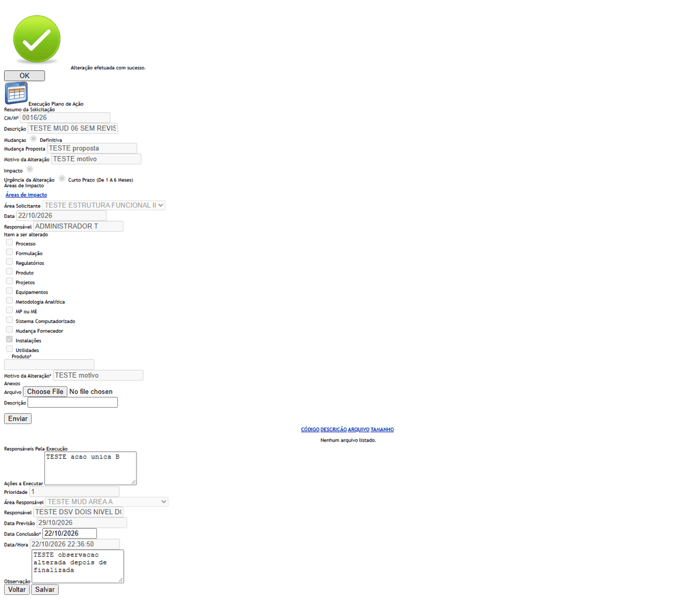
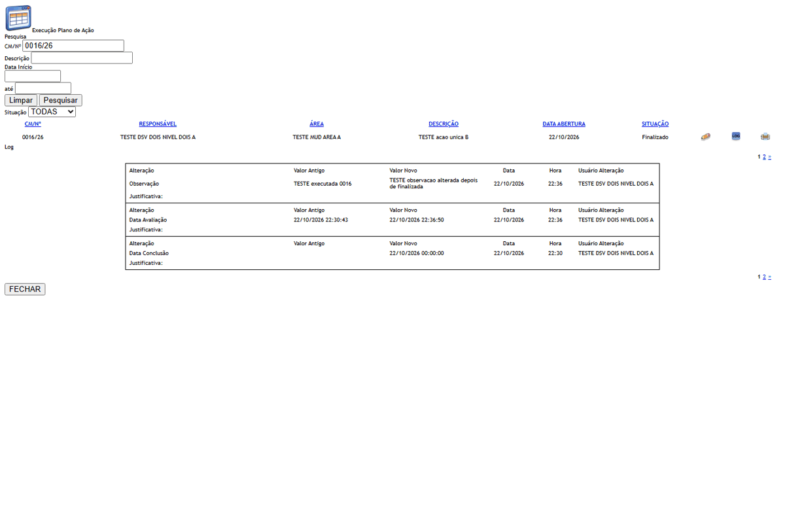
DV-GQ-256 · O histórico da mudança não registra a execução das ações, a finalização nem a passagem a Aceito
Finalizadas as mudanças 0016, 0017, 0018, 0019 e 0020, o histórico da mudança (pela Solicitação) não tem a conclusão, a execução das ações, a passagem para Pendente Finalização nem para Aceito: a última linha de cada uma é a inclusão das ações. Na aprovação final do produto também não há linha (ver DV-GQ-006).
Como reproduzir o erro, passo a passo
- Finalizar uma mudança pela Finalização Plano de Ação.
- Abrir o histórico da mudança pela Solicitação.
Esperado
Cada etapa (execução, conclusão, finalização, Aceito) no histórico, com quem, quando e por quê.
Obtido
A última linha é a inclusão das ações.
Sem captura de tela registrada para este defeito.
DV-GQ-267 · A lista não tem coluna de prazo nem marca de atraso; a ação abre com a Data Previsão vencida sem aviso; "Alteração efetuada com sucesso."; o histórico
A lista não tem coluna de prazo nem marca de atraso; a ação abre com a Data Previsão vencida sem aviso; "Alteração efetuada com sucesso."; o histórico não diz que foi concluída depois do prazo e a justificativa não é pedida.
Como reproduzir o erro, passo a passo
- Ação com prazo 22/10/2026 ainda Pendente (0028/26);
- em 23/10/2026 abrir a lista da Execução, abrir a ação e concluir com a data de hoje.
Esperado
A lista sinaliza a ação atrasada; concluir depois do prazo pede o motivo do atraso, que fica no histórico.
Obtido
A lista não tem coluna de prazo nem marca de atraso; a ação abre com a Data Previsão vencida sem aviso; "Alteração efetuada com sucesso."; o histórico não diz que foi concluída depois do prazo e a justificativa não é pedida.
Evidência (captura da tela)
DV-GQ-277 · O usuário da área B abre a ação de outra área e conclui: "Confirma a alteração do item?" e "Alteração efetuada com sucesso."; a ação vira Finalizado
O usuário da área B abre a ação de outra área e conclui: "Confirma a alteração do item?" e "Alteração efetuada com sucesso."; a ação vira Finalizado. O nível 1 foi barrado (volta para a lista, sem mensagem). O histórico registra o usuário da área B.
Como reproduzir o erro, passo a passo
- Desvio 089/26 com ação pendente de um usuário de nível 2 da área A;
- outro usuário de nível 2 (área B) abre pelo endereço da ação (Id 53, IdRnc 89), preenche data e observação e salva.
Esperado
Só o responsável da ação (ou a GQ) abre e conclui a ação; o outro usuário volta para a lista.
Obtido
O usuário da área B abre a ação de outra área e conclui: "Confirma a alteração do item?" e "Alteração efetuada com sucesso."; a ação vira Finalizado. O nível 1 foi barrado (volta para a lista, sem mensagem). O histórico registra o usuário da área B.
Evidência (captura da tela)


DV-GQ-024 · A observação de uma ação finalizada volta vazia ao reabrir a execução
A observação de uma ação finalizada volta vazia ao reabrir a execução. O que a tela mostra: A observação vem vazia.
Como reproduzir o erro, passo a passo
- Reabrir pelo lápis uma ação finalizada com observação.
Esperado
A observação aparece.
Obtido
A observação vem vazia.
Evidência (captura da tela)

DV-GQ-026 · O filtro por RD com o ano (por exemplo 030/26) não acha o desvio na maioria das telas
O filtro por RD com o ano (por exemplo 030/26) não acha o desvio na maioria das telas. O que a tela mostra: Não acha em 9 de 12 telas; funciona nas telas 1, 2 e 6.
Como reproduzir o erro, passo a passo
- Filtro RD/Nº com o número e o ano (por exemplo "030/26").
Esperado
Achar o desvio.
Obtido
Não acha em 9 de 12 telas; funciona nas telas 1, 2 e 6.
Evidência (captura da tela)

DV-GQ-029 · O botão Editar aparece nas listas para quem não deveria editar
O botão Editar aparece nas listas para quem não deveria editar. O que a tela mostra: O botão Editar aparece; nas telas 7 e 9 o clique devolve à lista; sem grupo a lista de Avaliação Área mostra Editar.
Como reproduzir o erro, passo a passo
- Usuário sem grupo (ou de nível 2) abre as listas.
Esperado
Lista sem botões de edição.
Obtido
O botão Editar aparece; nas telas 7 e 9 o clique devolve à lista; sem grupo a lista de Avaliação Área mostra Editar.
Evidência (captura da tela)


DV-GQ-038 · A caixa de responsável do plano preventivo lista usuários inativos, vencidos e bloqueados
A caixa de responsável do plano preventivo lista usuários inativos, vencidos e bloqueados. O que a tela mostra: Lista todos os usuários, inclusive os de conta inativa, vencida, bloqueada e sem permissão.
Como reproduzir o erro, passo a passo
- Abrir a caixa de responsável do plano preventivo.
Esperado
Só usuários ativos e válidos.
Obtido
Lista todos os usuários, inclusive os de conta inativa, vencida, bloqueada e sem permissão.
Evidência (captura da tela)
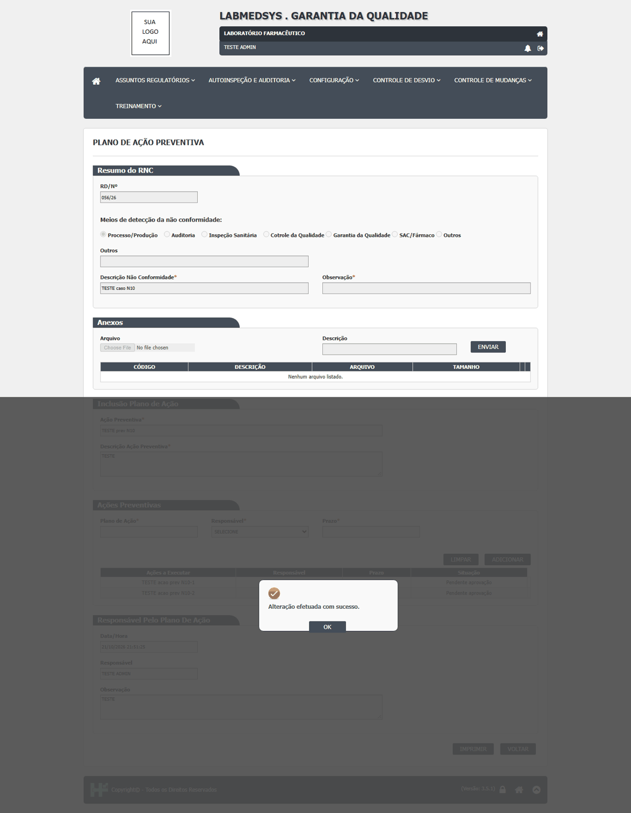
DV-GQ-048 · Salvar duas vezes seguidas duplica o resultado do monitoramento corretivo
Salvar duas vezes seguidas duplica o resultado do monitoramento corretivo. O que a tela mostra: O resultado fica duplicado.
Como reproduzir o erro, passo a passo
- Salvar duas vezes seguidas, sem recarregar, com um resultado novo.
Esperado
Um só resultado.
Obtido
O resultado fica duplicado.
Evidência (captura da tela)


DV-GQ-049 · Ao adicionar um resultado, a grade mostra só o novo até salvar e reabrir
Ao adicionar um resultado, a grade mostra só o novo até salvar e reabrir. O que a tela mostra: A grade mostra só o novo até salvar e reabrir.
Como reproduzir o erro, passo a passo
- Com resultados salvos, adicionar um novo.
Esperado
Grade com todos.
Obtido
A grade mostra só o novo até salvar e reabrir.
Evidência (captura da tela)


DV-GQ-050 · Editar uma ação do plano corretivo apaga a divisão e o responsável
Editar uma ação do plano corretivo apaga a divisão e o responsável. O que a tela mostra: Divisão e responsável voltam em branco; sem escolher de novo, o plano é recusado.
Como reproduzir o erro, passo a passo
- Editar pelo lápis uma ação do plano.
Esperado
Campos preenchidos como estavam.
Obtido
Divisão e responsável voltam em branco; sem escolher de novo, o plano é recusado.
Evidência (captura da tela)

DV-GQ-060 · O filtro de situação "Finalizado" ou "Aprovado" devolve a lista inteira
O filtro de situação "Finalizado" (tela 4) e "Aprovado" (tela 9) devolve a lista inteira.
Como reproduzir o erro, passo a passo
- Na tela Avaliação Área, filtrar a Situação por "Finalizado" e pesquisar.
- Na tela Monitoramento do Plano de Ação Corretiva, filtrar por "Aprovado" e pesquisar (a Monitoramento do Plano de Ação Preventiva repete o problema, rodada 3 parte C).
Esperado
Só os desvios na situação escolhida.
Obtido
Avaliação Área: 7 linhas, inclusive os pendentes (igual a TODAS). Monitoramento corretivo: 14 linhas, inclusive os 6 pendentes. Na Monitoramento preventiva o filtro "Aprovado" também devolve a lista inteira.
Evidência (captura da tela)


DV-GQ-066 · O filtro de situação do Plano de Ação Corretiva devolve vazio
O filtro de situação da lista do plano devolve vazio para a única situação que oferece.
Como reproduzir o erro, passo a passo
- Tela 7, Situação "Pendente Plano Ação Corretiva", Pesquisar.
Esperado
Os 8 desvios dessa situação.
Obtido
Lista vazia.
Sem captura de tela registrada para este defeito.
DV-GQ-067 · Filtro de datas: a Data Fim não inclui o próprio dia nas telas 7 a 10
Data Fim não inclui o próprio dia (Início = Fim dá lista vazia); na tela 7 só Início é ignorado e nas telas 7 e 8 só Fim é ignorado.
Como reproduzir o erro, passo a passo
- Nas telas 7, 8 e 9, Início e Fim iguais.
- Só Início.
- Só Fim.
Esperado
O próprio dia incluído; só Início e só Fim filtrando.
Obtido
Início = Fim dá vazio; o dia final nunca entra; na tela 7 só Início e só Fim são ignorados; na tela 8 só Fim é ignorado; na tela 9 só Fim filtra sem o dia.
Evidência (captura da tela)


DV-GQ-068 · Prazo de ação com data impossível entra na grade e dá erro inesperado ao salvar
Prazo com data impossível entra na grade; ao salvar dá "Ocorreu um erro inesperado."; 1900 diz "obrigatório"
Como reproduzir o erro, passo a passo
- Tela 7, ação com prazo 31/02/2026 (ou 00/00/0000), Adicionar, Salvar.
Esperado
Recusa no campo.
Obtido
A grade aceita; Salvar: "Ocorreu um erro inesperado." Com 01/01/1900: "O Prazo na Ação Corretiva número 1 é obrigatório."
Evidência (captura da tela)


DV-GQ-071 · Conclusão da ação antes da abertura do desvio e em 1900 é aceita
Conclusão antes da abertura do desvio e em 1900 é aceita.
Como reproduzir o erro, passo a passo
- Concluir uma ação em 21/10/2026 (desvio aberto em 22/10) e outra em 01/01/1900.
Esperado
Recusa.
Obtido
As duas gravam.
Sem captura de tela registrada para este defeito.
DV-GQ-073 · A lista de execução mostra uma só ação por desvio
A lista mostra uma só ação por desvio; a segunda só aparece no filtro Pendente.
Como reproduzir o erro, passo a passo
- Usuário responsável por duas ações do mesmo desvio, pesquisar TODAS, finalizar a ação mostrada, pesquisar de novo.
Esperado
As duas acessíveis.
Obtido
Uma linha por desvio; a ação 2 só no filtro Pendente.
Sem captura de tela registrada para este defeito.
DV-GQ-074 · O anexo enviado na execução não aparece no Monitoramento
Anexo enviado na execução não aparece no Monitoramento.
Como reproduzir o erro, passo a passo
- Tela 8, enviar anexo, salvar.
- Abrir o Monitoramento do mesmo plano.
Esperado
Anexo ligado ao desvio e visível.
Obtido
"Nenhum arquivo listado."
Evidência (captura da tela)

DV-GQ-075 · Resultado adicionado sem Sim ou Não é gravado como Não
Resultado adicionado sem Sim ou Não é gravado como Não.
Como reproduzir o erro, passo a passo
- Tela 9, Adicionar resultado sem escolher Implementada.
Esperado
Recusa.
Obtido
A linha entra como "Não".
Evidência (captura da tela)

DV-GQ-076 · O bloco "Responsável Pela Liberação" mostra o responsável do desvio, não quem libera
O bloco Responsável Pela Liberação mostra o responsável do desvio.
Como reproduzir o erro, passo a passo
- Tela 9, abrir o Monitoramento de um desvio cujo responsável é outra pessoa (041/26), ler o bloco Responsável Pela Liberação.
Esperado
O usuário que libera.
Obtido
O responsável do desvio.
Evidência (captura da tela)

DV-GQ-077 · O filtro de situação do Plano Preventivo só traz desvios cujo plano já foi aberto
O filtro de situação só traz os desvios cujo plano já teve a tela aberta; abrir e voltar cria um plano vazio.
Como reproduzir o erro, passo a passo
- Abrir e fechar o plano do 080/26 (tela 10), Situação = Aprovado Plano Ação Corretiva, Pesquisar.
Esperado
Os 8 desvios dessa situação.
Obtido
Só 009 e 080. Efeito colateral visto no PDF do Acompanhamento: o 080/26 passou a ter "Ações Preventivas: Não Iniciadas" sem ter plano salvo.
Sem captura de tela registrada para este defeito.
DV-GQ-079 · O campo "Ações Nº" do resultado aceita qualquer valor, sem ligação com as ações
O campo Ações Nº do resultado aceita qualquer coisa ("999", texto longo) sem ligação com as ações.
Como reproduzir o erro, passo a passo
- Tela 12, Adicionar resultado com Ações Nº 999 e outro com texto longo, Aprovar.
Esperado
Recusa ou ligação com as ações do plano.
Obtido
Aceita e aprova.
Evidência (captura da tela)
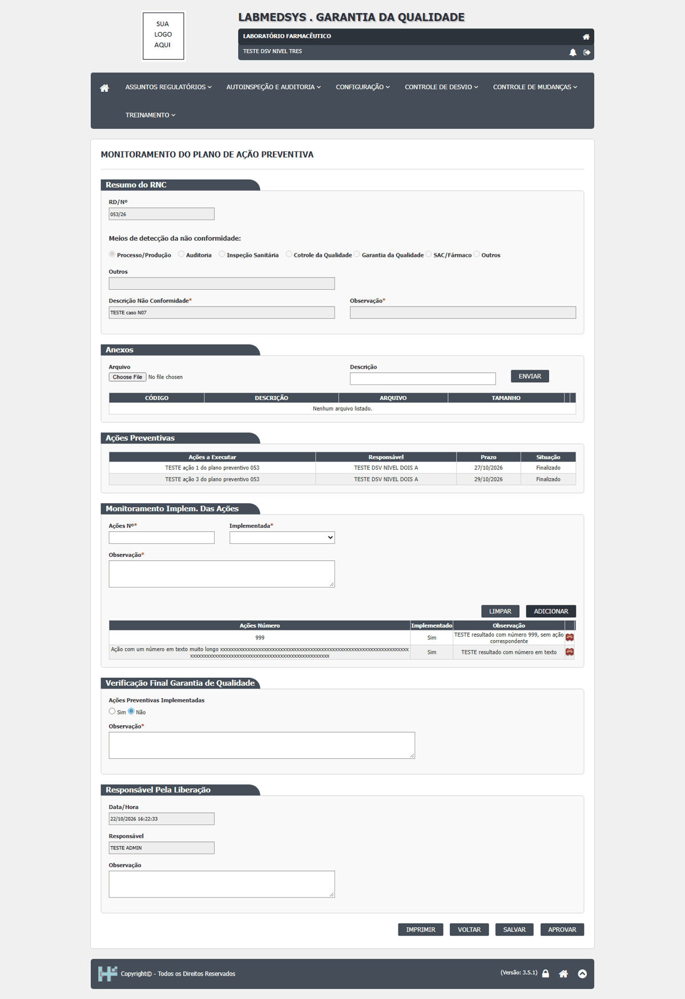
DV-GQ-080 · Envio e exclusão de anexo no monitoramento preventivo não deixam registro no histórico
Envio e exclusão de anexo não deixam registro no histórico.
Como reproduzir o erro, passo a passo
- Tela 12, enviar anexo, Salvar parcial, reabrir, excluir, Salvar, abrir o histórico.
Esperado
Linhas de anexo (como "Exclusão de anexo" da tela 1).
Obtido
Nenhuma.
Evidência (captura da tela)
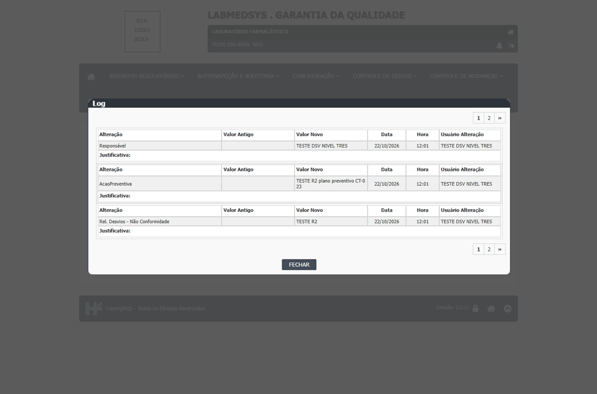
DV-GQ-085 · Editar uma ação do plano corretivo (lápis e Adicionar) apaga o responsável
Editar uma ação (lápis, Adicionar) apaga o responsável.
Como reproduzir o erro, passo a passo
- Tela 7, plano com uma ação, lápis da ação, mudar só o prazo, Adicionar.
Esperado
Responsável mantido.
Obtido
Responsável em branco na grade.
Evidência (captura da tela)

DV-GQ-087 · O PDF do plano corretivo não traz título, descrição nem observação do plano
O PDF do plano corretivo não traz título, descrição nem observação do plano.
Como reproduzir o erro, passo a passo
- Tela 7, título, descrição e observação do plano preenchidos, Salvar, Imprimir.
Esperado
Texto no PDF.
Obtido
O PDF só traz as ações. (O plano preventivo traz título e descrição, N10-16.).
Evidência (captura da tela)

DV-GQ-088 · A observação da execução do plano corretivo não é guardada nem impressa
A observação da execução do plano corretivo não é guardada nem impressa.
Como reproduzir o erro, passo a passo
- Tela 8, ação pendente, data e observação, Salvar, reabrir.
Esperado
Observação guardada.
Obtido
"Alteração efetuada com sucesso.", observação vazia ao reabrir e fora do PDF. Na tela 11 (preventiva) a observação é guardada.
Evidência (captura da tela)

DV-GQ-249 · Adicionar ação sem Área e sem Responsável entra na grade sem aviso e o salvar dá erro
Adicionar uma ação sem escolher Área Responsável nem Responsável coloca a linha na grade sem aviso. Ao salvar aparece "Ocorreu um erro inesperado." e nada é gravado. O servidor recusa, mas a tela não mostra a mensagem de campo obrigatório.
Como reproduzir o erro, passo a passo
- No Plano de Ação, preencher só a descrição, a prioridade e a data e clicar em Adicionar.
- Clicar em Salvar.
Esperado
Aviso na hora de adicionar: "Área Responsável é obrigatório." e "Responsável é obrigatório."
Obtido
A linha entra na grade; o salvar mostra "Ocorreu um erro inesperado."
Evidência (captura da tela)
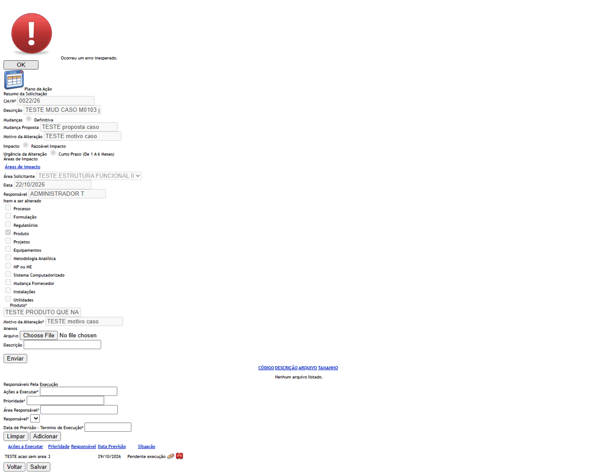

DV-GQ-251 · "Ocorreu um erro inesperado." ao salvar o plano de ação em duas de seis gravações
Ao salvar um plano com duas ações válidas, duas das seis gravações (mudanças 0016 e 0018, na primeira tentativa) deram "Ocorreu um erro inesperado."; repetindo, gravou. A confirmar se é intermitência do servidor de teste ou falha do sistema.
Como reproduzir o erro, passo a passo
- Preencher duas ações válidas no Plano de Ação e salvar.
- Se der erro, repetir.
Esperado
Gravar na primeira tentativa.
Obtido
Em duas de seis gravações: "Ocorreu um erro inesperado."; na repetição gravou.
Evidência (captura da tela)
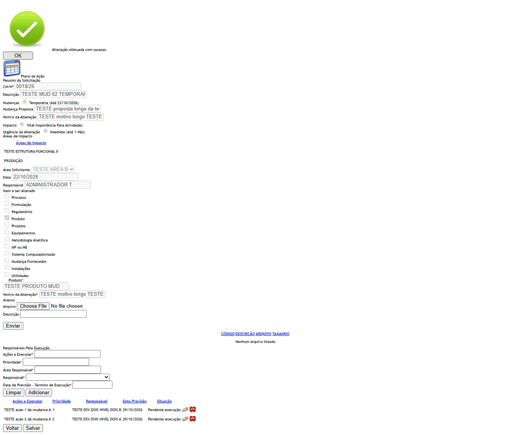
DV-GQ-254 · Os filtros Situação, Descrição e Área responsável da Execução Plano de Ação não filtram
Com Situação Finalizado, a lista devolveu também a linha Pendente; "acao 1" e a área B devolveram as ações da área A. Só CM/Nº e as datas funcionam.
Como reproduzir o erro, passo a passo
- Na lista da Execução Plano de Ação, filtrar por Situação Finalizado, depois por parte da Descrição e por Área responsável.
Esperado
Só as ações que combinam com cada filtro.
Obtido
Todas as ações voltam.
Evidência (captura da tela)
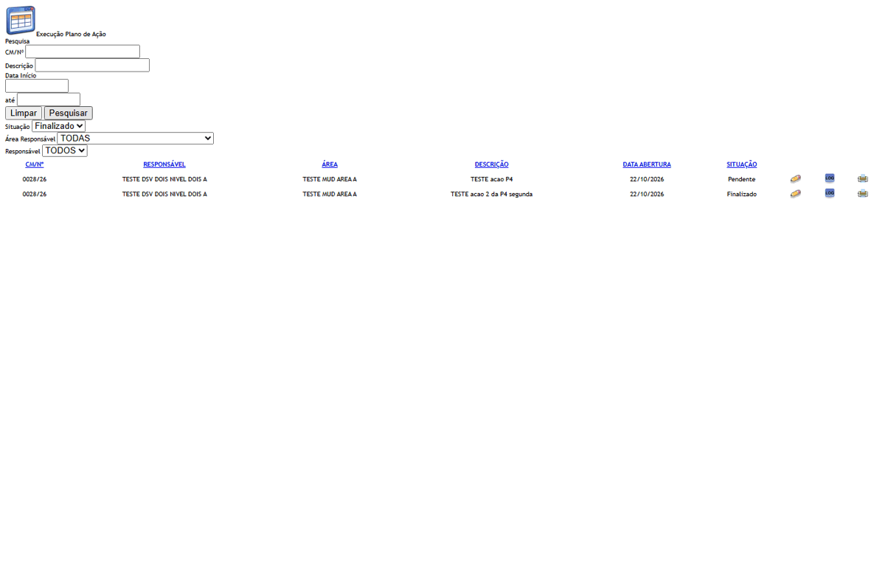
DV-GQ-257 · Filtros de data da Finalização: início = fim = hoje devolve vazio e Data Fim esconde as mudanças definitivas
Data início e fim iguais a hoje devolvem lista vazia, com seis mudanças existentes. Com a Data Fim preenchida só as mudanças temporárias aparecem; as definitivas somem. Data Fim de ontem: lista vazia.
Como reproduzir o erro, passo a passo
- Na lista da Finalização, informar Data início e Data fim iguais a hoje.
- Informar só a Data Fim.
Esperado
As mudanças do período, temporárias e definitivas.
Obtido
Lista vazia ou só as temporárias.
Sem captura de tela registrada para este defeito.
DV-GQ-258 · A Finalização não tem botão Reprovar: o plano nunca pode ser recusado
Não existe botão Reprovar na Finalização, nem com todas as ações finalizadas nem com uma pendente. Só Finalizar. O fluxo da equipe prevê a reprovação; o plano nunca vai a Não Aceito por esta tela.
Como reproduzir o erro, passo a passo
- Abrir a Finalização de uma mudança com todas as ações finalizadas e de outra com uma pendente.
Esperado
Existir Reprovar, com justificativa.
Obtido
Só aparece Finalizar (e nem esse com ação pendente).
Sem captura de tela registrada para este defeito.
DV-GQ-260 · O cronograma impresso lista a ação que foi excluída do plano
A ação excluída do plano (a ação 2 da mudança 0017) deixa o histórico com "Exclusão da Ação", mas o cronograma impresso na Finalização continua listando a ação, sem data de conclusão.
Como reproduzir o erro, passo a passo
- Excluir uma das duas ações do plano e salvar.
- Na Finalização, clicar em Imprimir Cronograma.
Esperado
O cronograma sem a ação excluída.
Obtido
A ação excluída continua no cronograma.
Evidência (captura da tela)
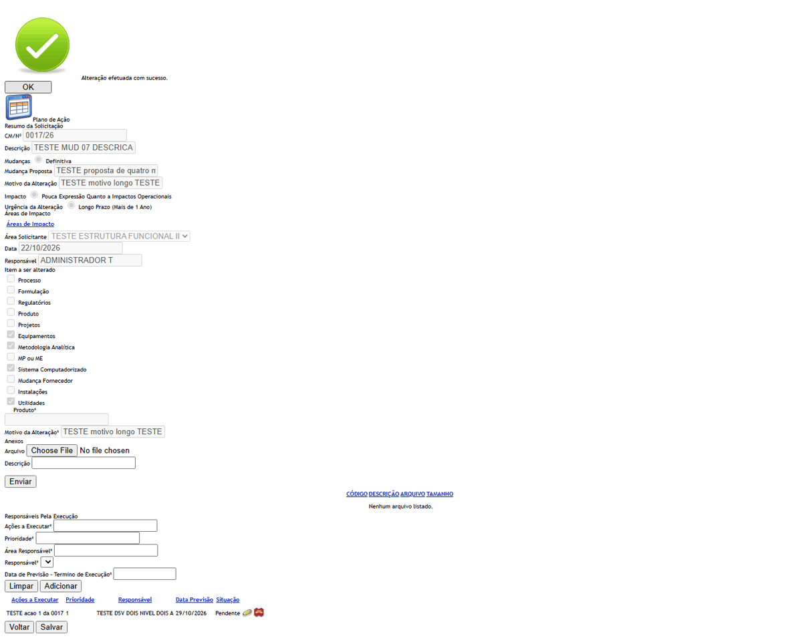
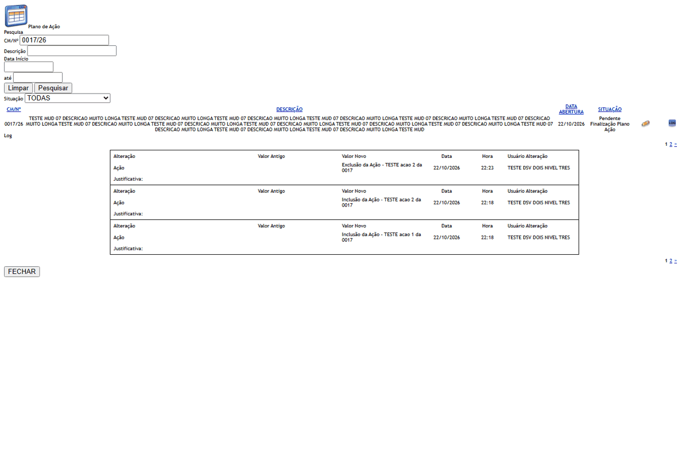
DV-GQ-331 · O botão Editar dos planos e do Monitoramento aparece para todos os perfis, mas só o Nível 3 consegue abrir
Nas listas do Plano de Ação Corretiva, do Monitoramento e do Plano de Ação Preventiva, os 7 perfis testados (Níveis 1, 2 e 3) veem o botão Editar em todas as linhas. Ao clicar, só o Nível 3 abre a tela; os Níveis 1 e 2 voltam para a lista, sem aviso.
Como reproduzir o erro, passo a passo
- Entrar com usuário de Nível 1 ou 2.
- Abrir a lista de uma das três telas e clicar em Editar.
- Observar que a tela volta para a lista, sem mensagem.
Esperado
Quem não pode editar não vê o botão, ou recebe uma mensagem clara ao tentar.
Obtido
O botão aparece para todos; no clique, Níveis 1 e 2 voltam para a lista sem explicação.
Sem captura de tela registrada para este defeito.
DV-GQ-069 · O campo Observação do plano é apagado ao enviar um anexo
O campo Observação é apagado ao enviar um anexo.
Como reproduzir o erro, passo a passo
- Tela 7, digitar a Observação, enviar um anexo.
Esperado
A observação continua.
Obtido
Campo em branco.
Evidência (captura da tela)

DV-GQ-070 · Data de conclusão com ano de 2 dígitos é aceita
Data de Conclusão aceita ano com 2 dígitos ("21/10/26").
Como reproduzir o erro, passo a passo
- Tela 8, Data de Conclusão 21/10/26, Salvar.
Esperado
Recusa por formato.
Obtido
"Alteração efetuada com sucesso.", gravado como 21/10/2026.
Sem captura de tela registrada para este defeito.
DV-GQ-072 · O histórico do plano mostra os nomes dos campos do relatório em vez dos do plano
No histórico, a descrição e a observação do plano aparecem com os nomes dos campos do relatório ("Rel. Desvios - Não Conformidade", "Observação").
Como reproduzir o erro, passo a passo
- Salvar o plano de ação corretiva de um desvio (no teste, o 078/26).
- Abrir o histórico do desvio.
Esperado
O histórico mostra os nomes dos campos do próprio plano de ação (descrição e observação do plano).
Obtido
A descrição e a observação do plano aparecem no histórico como "Rel. Desvios - Não Conformidade" e "Observação" (nomes dos campos do relatório); a Não Conformidade original, vista na tela Execução do Plano, não mudou.
Evidência (captura da tela)

DV-GQ-089 · O filtro Responsável da Execução do Plano Preventivo é ignorado
O filtro Responsável é ignorado.
Como reproduzir o erro, passo a passo
- Tela 11, Responsável = outro usuário, Pesquisar.
Esperado
Filtrar.
Obtido
Mesma lista de TODOS.
Sem captura de tela registrada para este defeito.
DV-GQ-250 · Prioridade fora de 1 a 10 é recusada em silêncio, a prioridade 0 passa e a mensagem tem erro de digitação
Na ação do plano, prioridade 11 ou letras não entram na grade e nenhuma mensagem aparece; a prioridade 0 é aceita ao adicionar. A mensagem do salvar traz "tem quer de 1 a 10".
Como reproduzir o erro, passo a passo
- Adicionar ações com prioridade 0, 1, 10, 11 e letras.
- Salvar o plano sem nenhuma ação para ver a mensagem de prioridade.
Esperado
Aviso quando a prioridade está fora de 1 a 10, e 0 recusado.
Obtido
11 e letras somem sem aviso; 0 passa; "Prioridade nos responsáveis tem quer de 1 a 10."
Evidência (captura da tela)
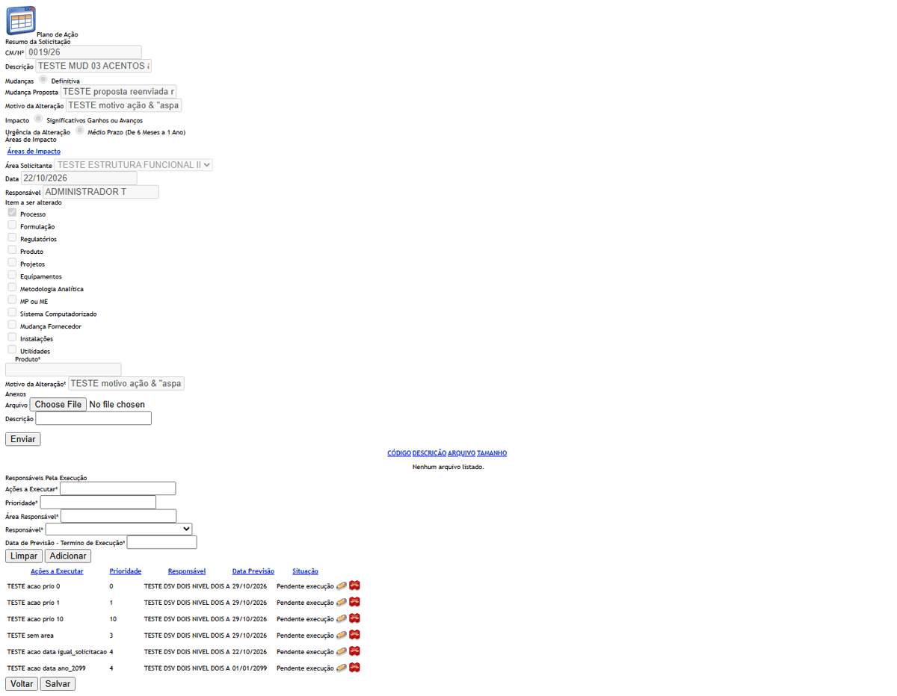
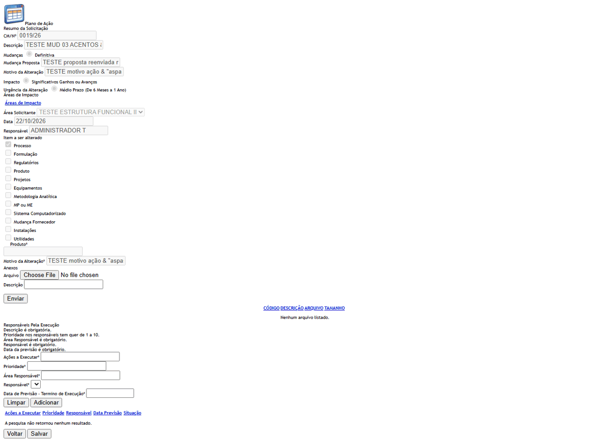
DV-GQ-252 · Data de previsão "21/10/26" é lida como ano 0026 e o ano 2099 é aceito sem limite
Na data de previsão da ação, "21/10/26" é lida como ano 0026 e recusada com a mensagem de data menor que a da solicitação; o ano 2099 é aceito sem limite.
Como reproduzir o erro, passo a passo
- Digitar 21/10/26 e depois uma data de 2099 na previsão da ação.
Esperado
Ano de dois dígitos interpretado como 2026 e limite razoável para o prazo.
Obtido
Ano 0026 recusado; 2099 aceito.
Sem captura de tela registrada para este defeito.
DV-GQ-255 · Data de conclusão inexistente (31/02) ou 00/00/0000 dá a mensagem "A Data de Conclusão é obrigatória."
A máscara só aceita números. 31/02/2026 e 00/00/0000 dão "A Data de Conclusão é obrigatória." (mensagem enganosa); "2026-10-21" vira "20/26/1021" no campo e dá a mesma mensagem; "21/10/26" dá a mensagem de data menor que a da solicitação.
Como reproduzir o erro, passo a passo
- Digitar 31/02/2026, 00/00/0000, 2026-10-21 e 21/10/26 na Data de Conclusão e salvar.
Esperado
Mensagem de data inválida.
Obtido
Mensagem de data obrigatória, que não corresponde ao erro.
Sem captura de tela registrada para este defeito.
DV-GQ-259 · O Log da linha na Finalização Plano de Ação abre vazio
O ícone Log da linha da lista da Finalização abre a janela com "A pesquisa não retornou nenhum resultado.", embora a mudança tenha histórico (visto pela Solicitação).
Como reproduzir o erro, passo a passo
- Na lista da Finalização, clicar em Log em uma mudança com histórico.
Esperado
O histórico da mudança.
Obtido
Janela vazia.
Sem captura de tela registrada para este defeito.
DV-GQ-332 · Seis das sete telas do Controle de Desvios testadas abrem sem login
Sem nenhuma sessão, o endereço dessas telas abre (código 200) com os filtros. Ao pesquisar, nenhuma linha vem, e o PDF do Acompanhamento RD dá erro 500; Relatório de Desvios dá "Server Error". Os dados não vazam nesse teste, mas a tela não exige sessão (relação com SEG-GQ-01).
Como reproduzir o erro, passo a passo
- Sem nenhuma sessão aberta, abrir o endereço de cada tela do módulo GQ.
Esperado
Redirecionar ao login.
Obtido
A página abre; ao pesquisar, nenhuma linha vem; o PDF do Acompanhamento dá erro 500.
Sem captura de tela registrada para este defeito.